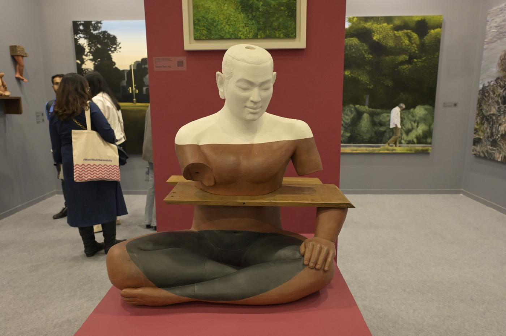
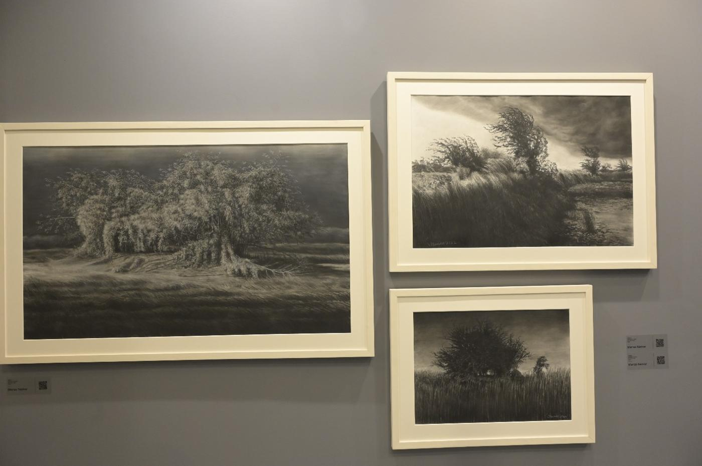
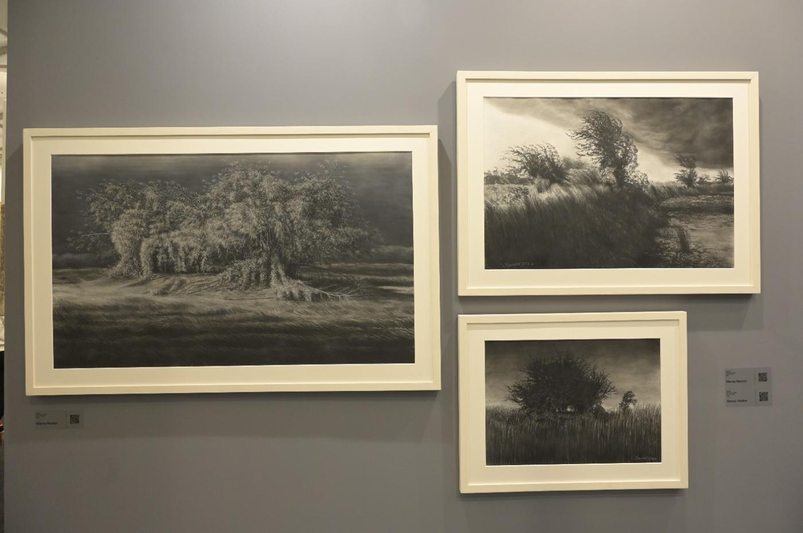
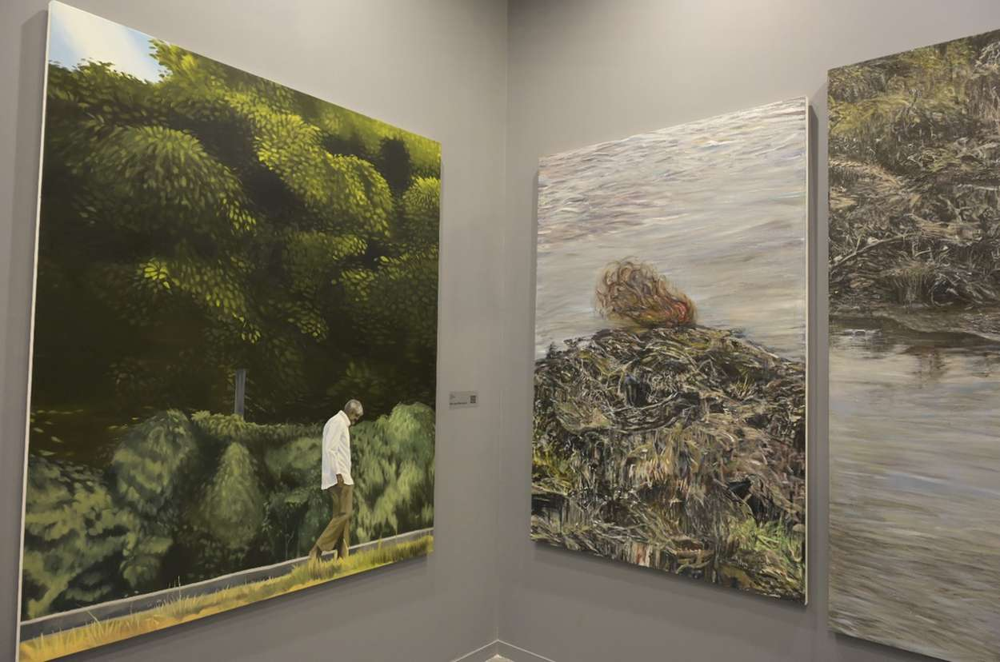
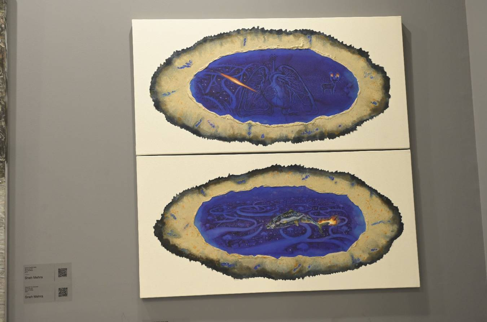

Image Credit - Gallery Dotwalk
Dotwalk is dedicated to creating a venue for art that is centred on authenticity and integrity,
that attracts up-and-coming artists, that communicates with art lovers around the world via technology,
and that enhances the art world. Sreejith CN, a prominent figure in the Indian art scene for the past 20
years, is a promoter of Gallery Dotwalk. Dotwalk debuted its main gallery in Gurugram, Delhi-National
Capital Region, in April 2022 with the exhibition "An unlocated window of myself." Aman Khanna, Arjun Das,
Chandrashekar Koteshwar, Chetnaa, Gigi Scaria, Himani Gupta, GR Iranna, Jagannath Panda, Manisha Gera
Baswani, Pooja Iranna, Prerna Sharma, Ravinder Reddy, Sujith SN, and Sumedh Rajendran were among the 14
artists featured in the Premjish Achari-curated exhibition.

Image Credit - Hyperglot Review
Chandrashekar Koteshwar
Chandrashekar has advanced to a more complex and difficult search into objecthood itself
through his current body of work. Most of the time, he intentionally sets his creations to be
incongruent. The purpose is to challenge the way forms and images are put together, as well as the
meaning-making process itself, as incomplete meanings can never be fully understood. Chandrashekar
draws inspiration from historical figures and conventional sculptural and cultural artefacts and he
constructs his own versions without much regard for the rules and canons of tradition.

Image Credit - Hyperglot Review
Manas Naskar
In order to better comprehend the changes in nature and the environment in his immediate surroundings,
Manas Naskar experiments with different painting materials and techniques. He is attempting to revisit
the current genre of paintings in a way that more closely resembles the romantics' ideology, which views
both the calmness and the wrath of nature as beautiful. Manas strives to catch those ephemeral moments
when a minute shift in the position of the sun produces a wonderful aura.

Image Credit - Hyperglot Review
Mansoor Mansoori
A prolific visual artist, Mansoor uses prints, photography, video, painting, and immersive light
installations. His works explore a range of topics including technology, environment, and emotional
suffering. Recent paintings by Mansoor place a strong emphasis on the frail human presence in imagined
settings. The visual idiom of the paintings leans toward figurative style, and the entire work is
incredibly atmospheric, capturing the mood of the environment through the deft rendering of space,
light, and building.

Image Credit - Hyperglot Review
Midhun Gopi
The journeys shown in Midhun's paintings seem to never end; they take the viewer through the wilderness,
the cosmos, the interior landscapes of the mind, and the hardships of society. In certain instances,
he weaves memories and feelings together so that they are lucid yet possess complexity. In his works,
the sceneries and forms blend together and start to complement one another. The images evoke a sense of
individual or community recollection mingled with forms.

Image Credit - Hyperglot Review
Prerna Sharma
Prerna uses fish as a metaphor for the psychological conflicts and feelings that people experience when
they deal with others and with themselves. She believes that given that we can't see or hear a fish's
agony or fear while they experience a range of emotions, suffering is frequently concealed on a person's
face. The fish have tear ducts, but since their eyes are constantly wet, we cannot see them cry. Prerna
still vividly recalls images of mass graves of dead people from the horrific tsunami that struck the
coastline in 2014. Additionally, she utilises the analogy of fish to describe the trauma.

Image Credit - Hyperglot Review
Sneh Mehra
The works of Sneh Mehra are largely concerned with the land and environment and include other
multidisciplinary aspects such as the evolution of the land, the environment and ecology,
climate change, animal behaviour, etc. These are all staged in the landscape regime, which,
throughout the history of art, has only ever been used to show natural surroundings such as mountains,
rivers, sky, seascapes, etc. as the background of portraits. Her art is inspired by references that
reflect her surroundings and the shards of chaotic growth and disintegration.

Image Credit - Hyperglot Review
Tanaya Rao Raj
Tanaya is passionate about upcycling and incorporates discarded and salvaged materials into her art practice. Her creations are the outward expressions of an innate need and need to employ (or repurpose) all manner of trash, including found things and materials. She uses paint and katran (or textile waste) to create varied sceneries and/or abstract forms that are influenced by nature in her most recent body of work. She considers every type of discarded material to be a reflection of herself, aiming to give each piece of art a unique purpose and identity.

Image Credit - Hyperglot Review